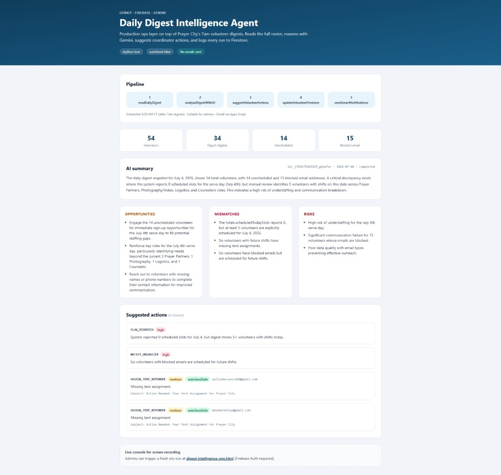
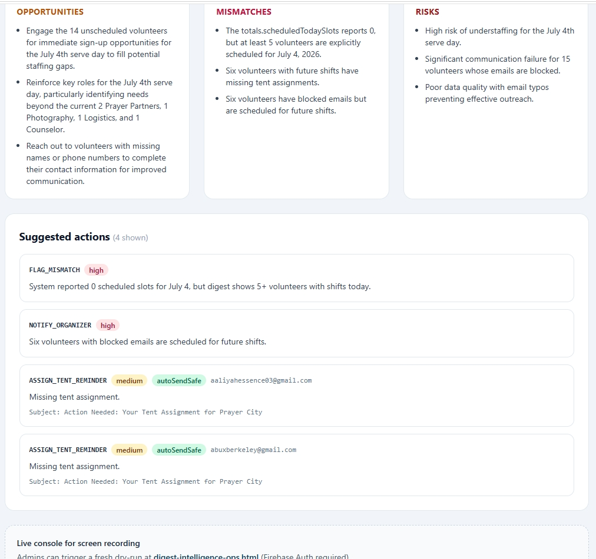
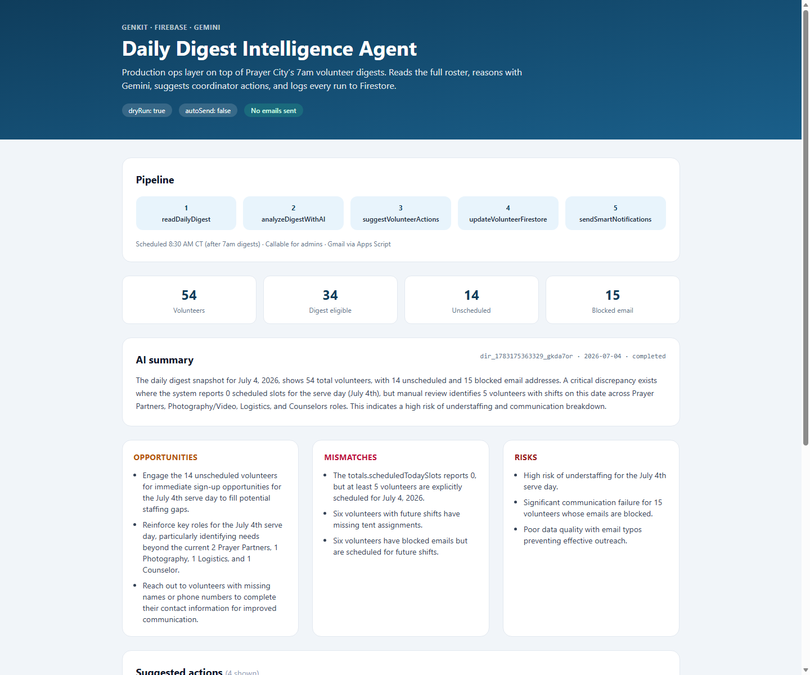
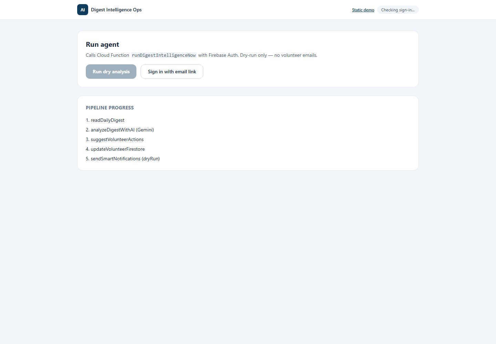

Agentic AI · Shipped July 2026
Daily Digest Intelligence Agent
Production Genkit agent on Firebase that runs after the 7am volunteer digest — reads the full roster, reasons with Gemini about gaps and mismatches, suggests coordinator actions, and logs every run to Firestore. dryRun and autoSend gates keep humans in control.
Live demo ↗ Ops console ↗ Prayer City platform → Our Agentic AI service →

Problem
The 7am digest emails each volunteer their personal role content — but nobody was looking across the whole roster. Coordinators couldn't easily spot unscheduled volunteers, blocked emails with upcoming shifts, tent mismatches, or staffing gaps before doors opened.
Solution
An intelligence layer on top of existing Firebase + Gmail automation — not a replacement for the digest.
- readDailyDigest — merges Firestore onboarding + volunteer records and today's digest preview
- analyzeDigestWithAI — Gemini finds opportunities, mismatches, and risks across the team
- suggestVolunteerActions — up to 8 structured actions with priority and
autoSendSafeflags - updateVolunteerFirestore — coordinator flags and notes on volunteer records
- sendSmartNotifications — targeted Gmail via existing Apps Script bridge (only when autoSend enabled)
Scheduled 8:30 AM CT after digests · Callable for admins · Full audit in digest_intelligence_runs
Results
On the first production dry run (July 4, 2026), the agent flagged a critical schedule discrepancy (0 reported slots vs 5 volunteers with shifts), 15 blocked emails, 14 unscheduled volunteers, and drafted tent reminders — all without sending a single email. Coordinators get a daily ops brief instead of re-reading 54 inboxes.
Try it live
Demo & ops console
- Static demo — portfolio-ready output from a real dry run
- Ops console — Firebase Auth admins trigger a fresh dry run (~2–4 min)
- Firestore audit log — watch
status: running → completed
Technology
Screenshots



"The 7am digest tells each volunteer their tasks. The intelligence agent tells us what we missed — blocked emails, tent gaps, and who's not scheduled before serve day."
Need an AI agent on top of your ops stack?
Explore Agentic AI